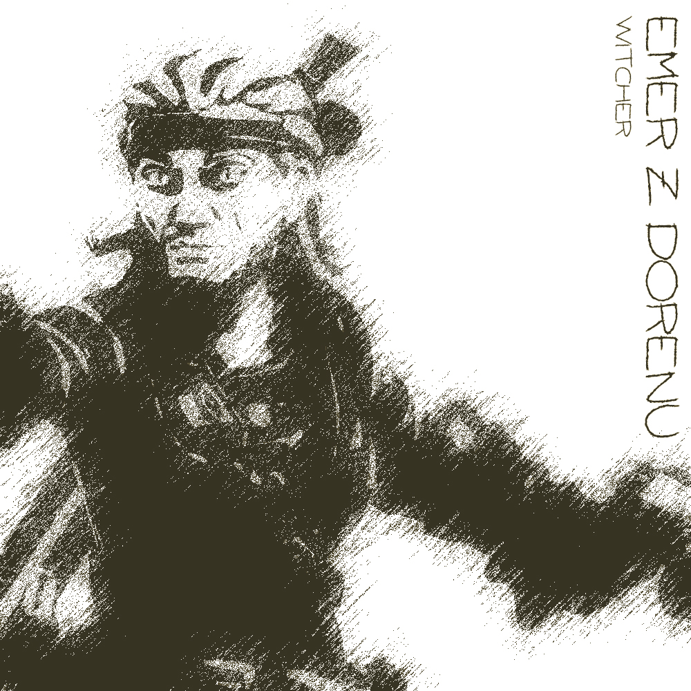
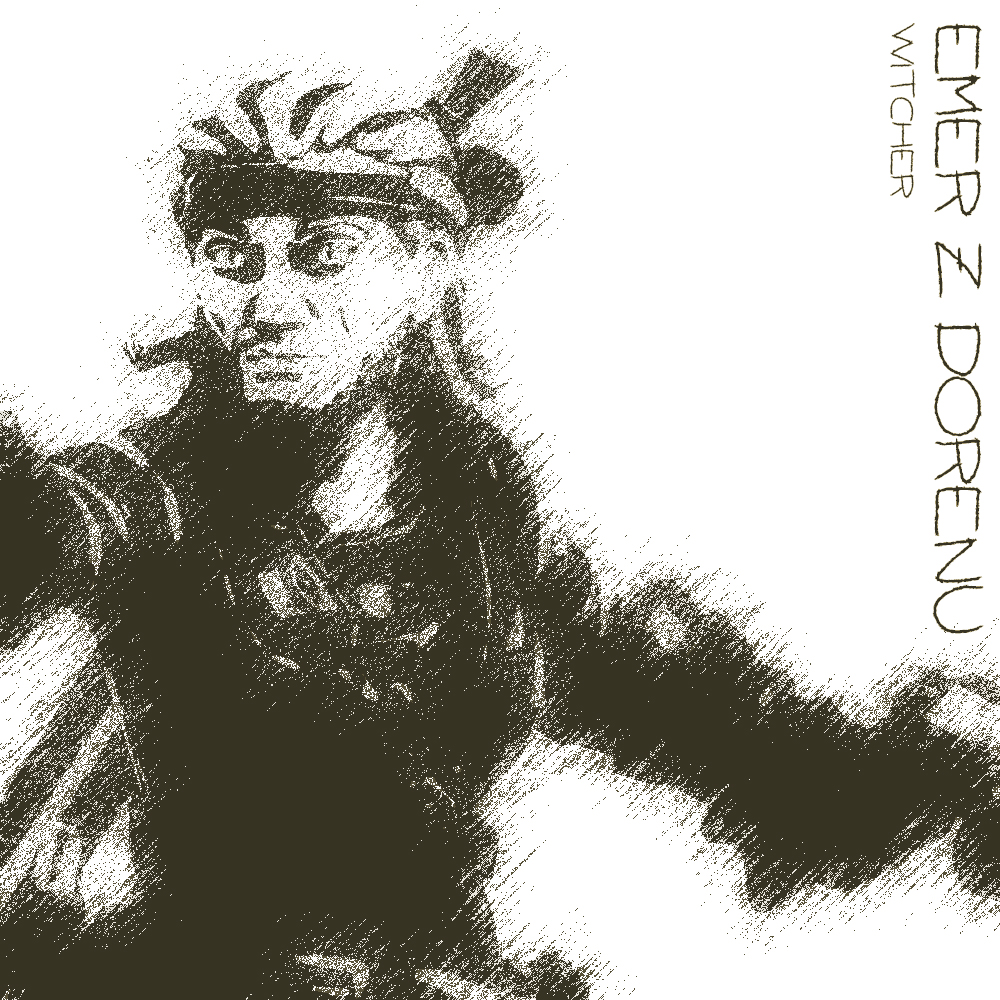

Emer z Dorinu
Emerovi oči nenechají nikoho klidným. Vyrovnaný zaklínač, původem kdoví odkud, se dostal do Pełzacze hledajíc nějakou pořádnou zakázku, ale vše co zde našel byla akorát družinka, která se mu podle jeho slov "pletla do cesty" a pár vlků. To však ale netušil, jaké zakázky mu Garagor a celá Varka připravím protože na těch se mu přátelé určitě hodit budou.
Dobrodružství, která prožil:
- Hledání ztraceného syna
- - Franci Jeszetovi se ztratil syn, boj s vlky
- Doprovod karavany
- - doprovod zboží do Garagoru, potkání Narmera a Neery
- Průzkum rozbitých chodeb podzemí
- - průzkum podzemních komplexů, na který dostal Emer zakázku, pořádná první Zaklínačská práce!
- Hledání Neery pt.1
- - Neeru někdo unesl, vyšetřování kdo jí unesl, Perlíkův moment boje, setkání s GGG a Alocou
- Hledání Neery pt.2
- - Neera se konečně dostala do Věže, kde družinu přivítal Raistlin a slíbil, že Neera se bude učit a bude mít ve Věži útočiště
- První práce pro Narmera
- - Narmer družině řekl, že potřebuje aby pro něj sehnali magický předmět, který měl kdysi Ferfi Devon, boj s pavouky, boj s nemrtvými (ghúlové a hobbit-sized skeleton) a fextem.
- - Emer získal Meč Toho Posledního
 

Wildhunt Ranger